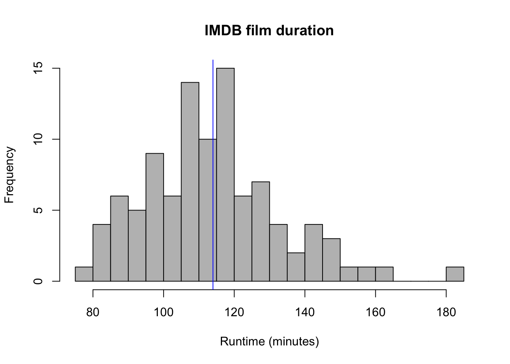
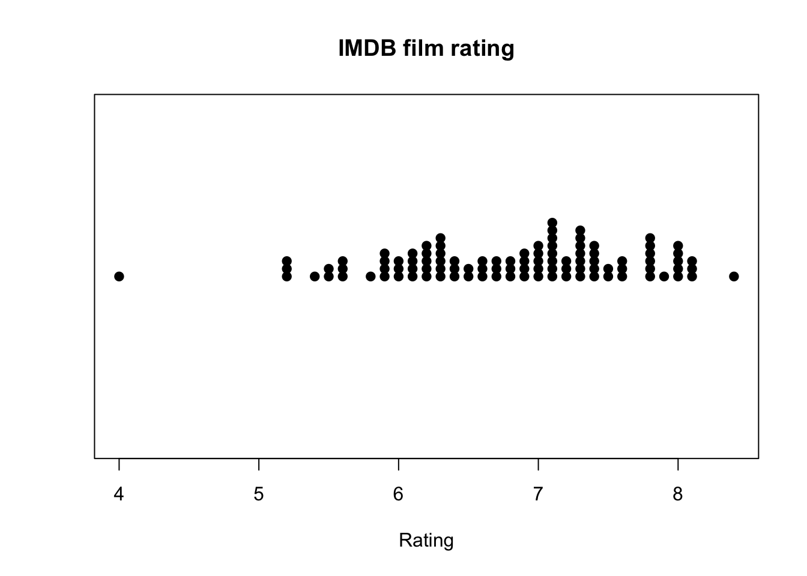
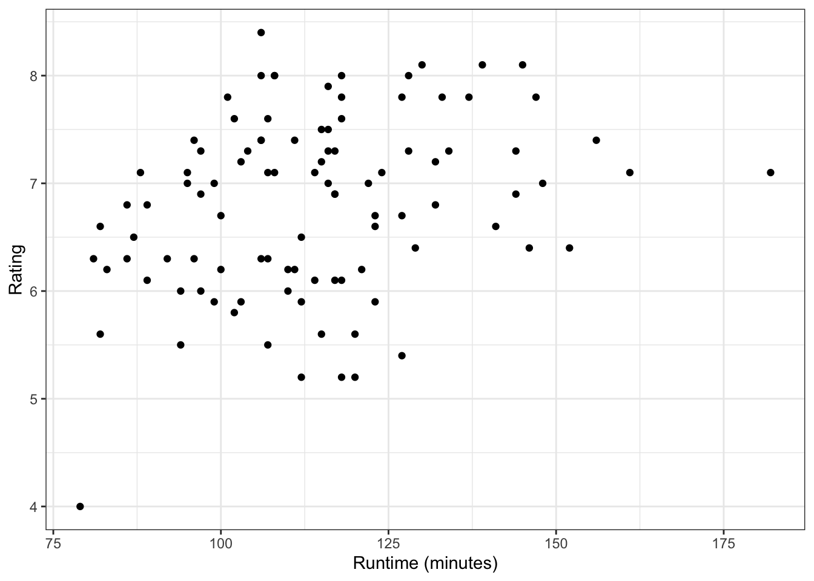
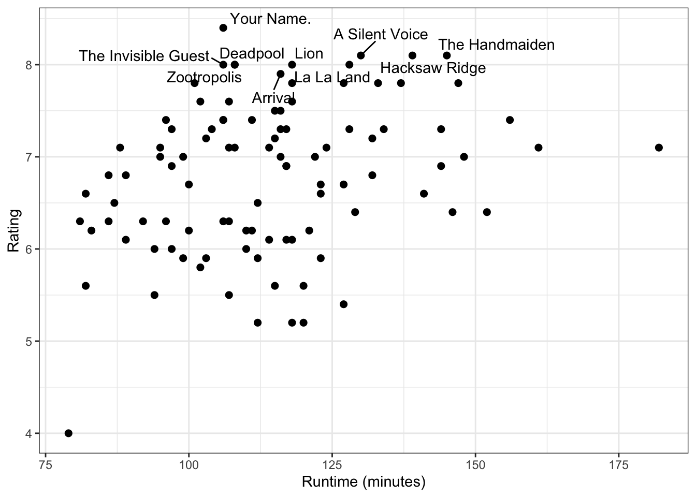
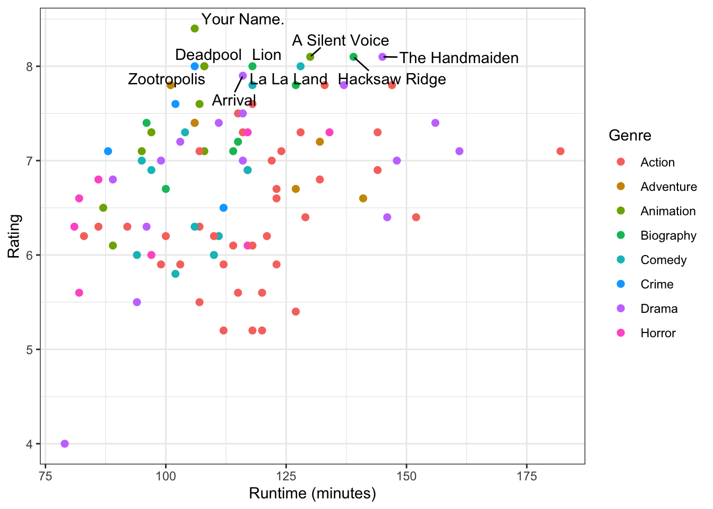
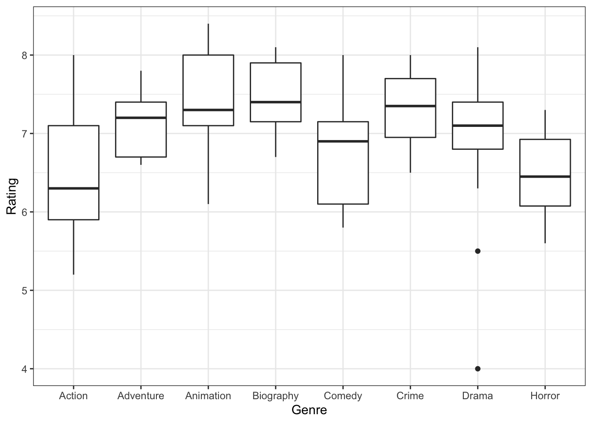
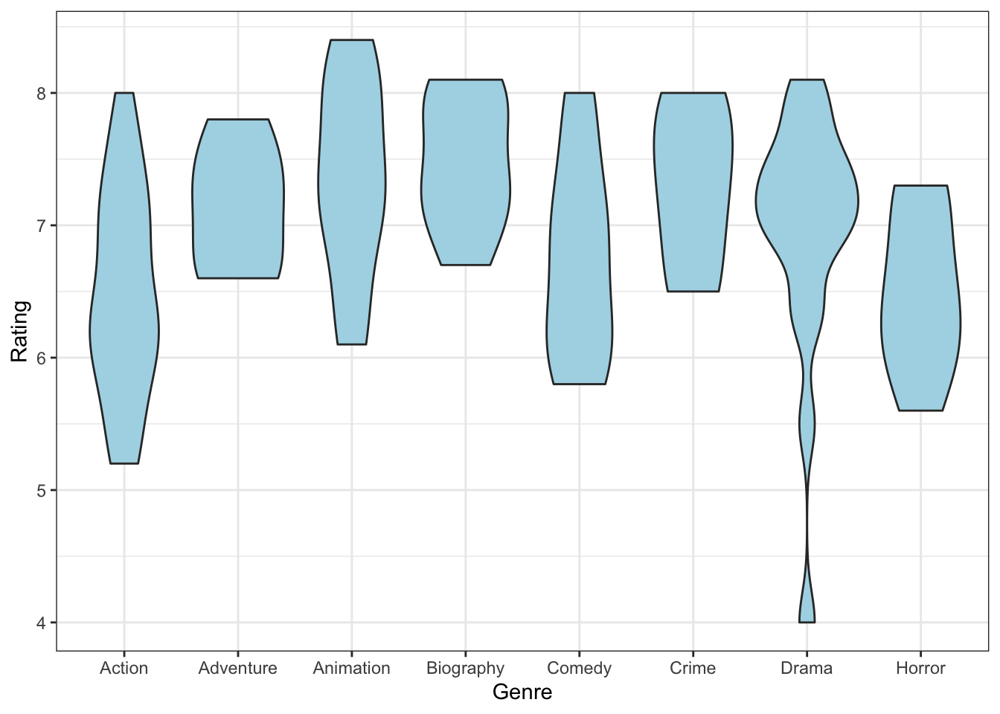
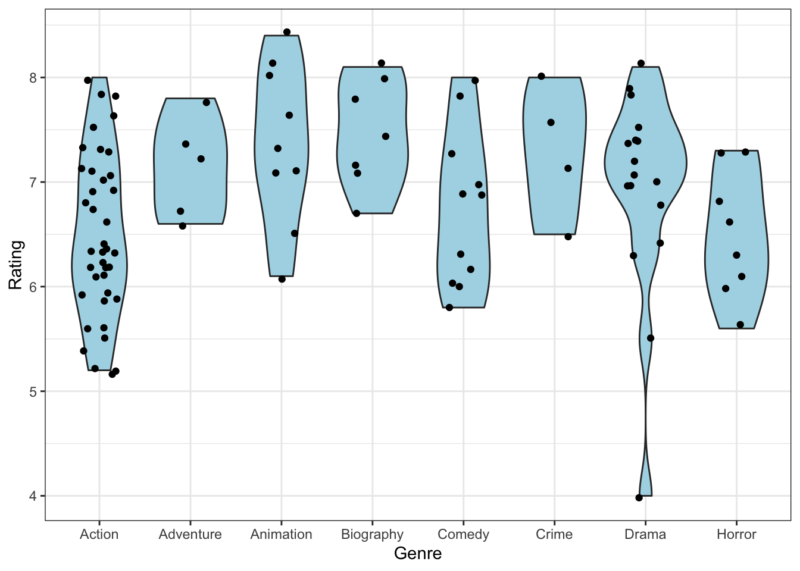
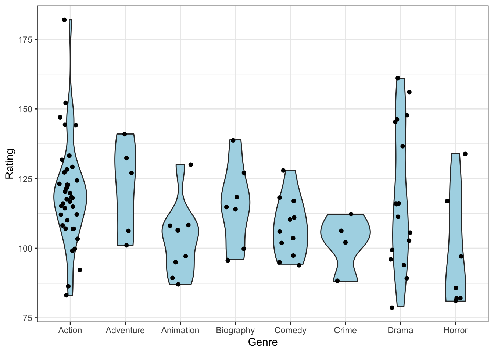

Chapter 5 Web scraping in R
During this session, we will learn how to use R to perform “web scraping”. Web scraping, aslfo called web harvesting, is the extraction of data from websites in an ordered and structured manner. We have all done web scraping in its simplest form: simply “copying and pasting”. However, sometimes the information on a website is extremely unstructured (buried in the text or in formats which are difficult to interpret), and it would be time consuming to copy and paste all the information we need by hand. Furthermore, often we need to scrape not one but tends or hundreds of aspects of a website; and often this has to be repeated for multiple websites too. Hence, developing methods for atuomated web scraping is central in big data and data analysis.
The R package “rvest” can be used for web scraping. Let’s first install it. We will also install “wordcloud”, which can be used for processing text data.
install.packages("rvest")
install.packages("wordcloud")Now let’s load it. We will also load the ggplot2 and ggrepel packages for data visualisation.
library(rvest)
library(ggplot2)
library(ggrepel)
library(wordcloud)For eficient web scraping, you will need the “Selector Gadget”. Make sure you have a working version of Google Chrome installed. Next, use Chrome to open the following link:
https://chrome.google.com/webstore/detail/selectorgadget/mhjhnkcfbdhnjickkkdbjoemdmbfginb?hl=en
Finally, click the “Add to chrome” buttom, it should only take a few seconds. Now the Selector Gadget is ready to use.
5.1 Example: Scraping the IMDB website
For the purpose of this tutorial, we will be scraping the IMDB website, which contains raiting and information for films. Let’s focus specifically on the following website, which contains the 100 most popular films released between January and December 2016:
http://www.imdb.com/search/title?count=100&release_date=2016,2016&title_type=feature
Take some time to explore the website and its metrics. Notice that, for each film, IMDB contains information such as its title, portrait, rating, staring actors, rank, genre, duration, etc…
The first fact we have to realise is that websites are simply files, just as our word files or spreadsheets are files. They are files written in the “hyper-text markup language” (html). Every time we access a website, we specify our computer the location of such file via a “Uniform resource locator” (URL) and the computer displays the file using a browser (Chrome, Safari, Firefox, etc…). Browsers simply translate the HTML language to something easy for us to visualise: an arrangement of images, colours, text, links, and other objects.
We can easily open html files in R just as we have previously opened spreadsheets (CSV files), text files or tables. We use the function “read_html()”, which is part of the rvest package. Let’s read the top 100 2016 IMDB films website into R. We’ll assign the content to a variable called “webpage”.
webpage <- read_html("http://www.imdb.com/search/title?count=100&release_date=2016,2016&title_type=feature")Let’s look at the content of “webpage”:
webpage## {html_document}
## <html xmlns:og="http://ogp.me/ns#" xmlns:fb="http://www.facebook.com/2008/fbml">
## [1] <head>\n<meta http-equiv="Content-Type" content="text/html; charset=UTF-8">\n<script type="text/javascript">var ue_t0=ue_t0||+new Date();</script><script type="text/jav ...
## [2] <body id="styleguide-v2" class="fixed">\n <img height="1" width="1" style="display:none;visibility:hidden;" src="//fls-na.amazon.com/1/batch/1/OP/A1EVAM02EL8 ...Note that it is an xml document and that it contains several fields, written in HTML (HTML is a language characterised by a lot of < > symbols). Inside this variable is contained all the information we can see when scrolling in our browser.
5.2 Extracting variables using CSS selectors
Now let’ move to Chrome. We will use Chrome’s “Selector Gadget”” to retrieve specific fields/variables from the website. To activate the selector gadget, click on the magnifying glass at the top right corner of the browser. Now, if you move your pointer around the website, you will see different sections being highlighted. Find any section that interests you (for example, one of the pirctureS) and click on it. You will see that a string of text appears in the bottom right corner of the screen. This text is called the “CSS selector”. You can think of CSS selectors as “unique identifiers” of specific elements on a website. For example, you’ll notice that when you clicked the film’s image all the other images were also highlighted. This is because that CSS elector identifies ALL the film covers. This is useful because we can use this text to extract all of them, instead of copying and pasting 100 images one by one. Let’s apply this to web scraping.
Using the Selector Gadget, click on the title of the first film. You should see the entirety of he title highlighted in yellow. The text “.lister-item-header” will appear at the bottom right. This is the CSS selector for movie titles. Copy that text.
Now use the function “html_nodes” and specify that you want to extract the film titles by pasting the CSS selector, as follows:
title_data_html <- html_nodes(webpage,'.lister-item-header a')The titles have now been scraped! Let’s see how they look:
head(title_data_html)## {xml_nodeset (6)}
## [1] <a href="/title/tt1431045/?ref_=adv_li_tt">Deadpool</a>
## [2] <a href="/title/tt3748528/?ref_=adv_li_tt">Rogue One</a>
## [3] <a href="/title/tt1386697/?ref_=adv_li_tt">Suicide Squad</a>
## [4] <a href="/title/tt1211837/?ref_=adv_li_tt">Doctor Strange</a>
## [5] <a href="/title/tt3783958/?ref_=adv_li_tt">La La Land</a>
## [6] <a href="/title/tt3799694/?ref_=adv_li_tt">The Nice Guys</a>We cannot understand anything because they are in HTML language! Let’s convert them to normal textusing the function “html_text()”. We’ll store these titles in the variable “title_data”.
title_data <- html_text(title_data_html)Now they are understandable to us:
title_data## [1] "Deadpool" "Rogue One" "Suicide Squad"
## [4] "Doctor Strange" "La La Land" "The Nice Guys"
## [7] "Moana" "Hacksaw Ridge" "Sing"
## [10] "Arrival" "Captain America: Civil War" "Nocturnal Animals"
## [13] "The Handmaiden" "X-Men: Apocalypse" "Split"
## [16] "10 Cloverfield Lane" "Fantastic Beasts and Where to Find Them" "Me Before You"
## [19] "Zootropolis" "War Dogs" "Hell or High Water"
## [22] "High Strung" "Batman v Superman: Dawn of Justice" "Train to Busan"
## [25] "Your Name." "Gods of Egypt" "Passengers"
## [28] "Hidden Figures" "Captain Fantastic" "Jason Bourne"
## [31] "13 Hours" "The Huntsman: Winter's War" "Below Her Mouth"
## [34] "Star Trek Beyond" "Ghostbusters" "Central Intelligence"
## [37] "Don't Breathe" "Manchester by the Sea" "The Conjuring 2"
## [40] "The Neon Demon" "The Accountant" "Swiss Army Man"
## [43] "Moonlight" "Miss Peregrine's Home for Peculiar Children" "The Shallows"
## [46] "Lion" "Independence Day: Resurgence" "Assassin's Creed"
## [49] "Terrifier" "Hush" "Warcraft: The Beginning"
## [52] "The Magnificent Seven" "Raw" "Silence"
## [55] "Sausage Party" "Love Machine" "Allied"
## [58] "Why Him?" "The Founder" "A Cure for Wellness"
## [61] "Jack Reacher: Never Go Back" "Hunt for the Wilderpeople" "Dirty Grandpa"
## [64] "The Wailing" "The Lost City of Z" "The Autopsy of Jane Doe"
## [67] "The Jungle Book" "Allegiant" "The Girl on the Train"
## [70] "Teenage Mutant Ninja Turtles: Out of the Shadows" "The Invisible Guest" "Batman v Superman: Dawn of Justice - Ultimate Edition"
## [73] "Resident Evil: The Final Chapter" "The Great Wall" "My Big Fat Greek Wedding 2"
## [76] "The Legend of Tarzan" "Sully: Miracle on the Hudson" "The Edge of Seventeen"
## [79] "The Bad Batch" "Now You See Me 2" "Handsome Devil"
## [82] "The Secret Life of Pets" "Inferno" "Kung Fu Panda 3"
## [85] "The 5th Wave" "Lights Out" "Grimsby"
## [88] "London Has Fallen" "The Boy" "Everybody Wants Some!!"
## [91] "Lady Macbeth" "A Silent Voice" "Finding Dory"
## [94] "Deepwater Horizon" "Brimstone" "The Take"
## [97] "Jackie" "How to Be Single" "Hail, Caesar!"
## [100] "Keanu"5.3 Scraping multiple fields from a website
A) IMDB ranking:
Now we have the titles for the top 100 2016 IMDB films, but if we want to do any serious analysis on them we will need more data. Let’s repeat the previous process and use CSS selectors to scrap more fields. We start by scraping the rankings:
rank_data_html <- html_nodes(webpage,'.text-primary')We convert the rankings from html to text in the same way we did above:
rank_data <- html_text(rank_data_html)However, note that the rankings shouldn’t really be text, but numbers.
head(rank_data)## [1] "1." "2." "3." "4." "5." "6."Let’s use as.numeric() to convert them into nummeric variables. We’ll store this in the variable “rank_data”.
rank_data <- as.numeric(rank_data)Now they look better.
rank_data## [1] 1 2 3 4 5 6 7 8 9 10 11 12 13 14 15 16 17 18 19 20 21 22 23 24 25 26 27 28 29 30 31 32 33 34 35 36 37 38 39 40 41 42
## [43] 43 44 45 46 47 48 49 50 51 52 53 54 55 56 57 58 59 60 61 62 63 64 65 66 67 68 69 70 71 72 73 74 75 76 77 78 79 80 81 82 83 84
## [85] 85 86 87 88 89 90 91 92 93 94 95 96 97 98 99 100B) Film duration:
Let’s repeat the same process to extrac the duration of each film, which in IMDB is called “runtime”.
runtime_data_html <- html_nodes(webpage,'.runtime')
runtime_data <- html_text(runtime_data_html)
runtime_data## [1] "108 min" "133 min" "123 min" "115 min" "128 min" "116 min" "107 min" "139 min" "108 min" "116 min" "147 min" "116 min" "145 min" "144 min" "117 min" "103 min" "132 min"
## [18] "106 min" "108 min" "114 min" "102 min" "96 min" "152 min" "118 min" "106 min" "127 min" "116 min" "127 min" "118 min" "123 min" "144 min" "114 min" "94 min" "122 min"
## [35] "117 min" "107 min" "88 min" "137 min" "134 min" "117 min" "128 min" "97 min" "111 min" "127 min" "86 min" "118 min" "120 min" "115 min" "82 min" "82 min" "123 min"
## [52] "132 min" "99 min" "161 min" "89 min" "79 min" "124 min" "111 min" "115 min" "146 min" "118 min" "101 min" "102 min" "156 min" "141 min" "86 min" "106 min" "120 min"
## [69] "112 min" "112 min" "106 min" "182 min" "107 min" "103 min" "94 min" "110 min" "96 min" "104 min" "118 min" "129 min" "95 min" "87 min" "121 min" "95 min" "112 min"
## [86] "81 min" "83 min" "99 min" "97 min" "117 min" "89 min" "130 min" "97 min" "107 min" "148 min" "92 min" "100 min" "110 min" "106 min" "100 min"Again, this variable isn’t really a text but a number (number of minutes). Let’s first remove the text ” minute” from every element using gsub().
runtime_data <- gsub(" min","",runtime_data)Now let’s transform the text to nummeric and store it in the variable “runtime_data”.
runtime_data<-as.numeric(runtime_data)It looks much better!
runtime_data## [1] 108 133 123 115 128 116 107 139 108 116 147 116 145 144 117 103 132 106 108 114 102 96 152 118 106 127 116 127 118 123 144 114 94 122 117 107 88 137 134 117 128 97
## [43] 111 127 86 118 120 115 82 82 123 132 99 161 89 79 124 111 115 146 118 101 102 156 141 86 106 120 112 112 106 182 107 103 94 110 96 104 118 129 95 87 121 95
## [85] 112 81 83 99 97 117 89 130 97 107 148 92 100 110 106 100C) Film genre:
Now let’s scrape the genre of each movie.
genre_data_html <- html_nodes(webpage,'.genre')
genre_data <- html_text(genre_data_html)head(genre_data)## [1] "\nAction, Adventure, Comedy " "\nAction, Adventure, Sci-Fi " "\nAction, Adventure, Fantasy " "\nAction, Adventure, Fantasy "
## [5] "\nComedy, Drama, Music " "\nAction, Comedy, Crime "There are several problems here: firstly, there is a lot of extra space. Secondly, all the genres start with the new line () symbol. Finally, there are multiple genres for each film. Let’s fix these issues one by one.
First, we remove the new line symbols using gsub().
genre_data<-gsub("\n","",genre_data)Next, we do the same to remove empty spaces.
genre_data<-gsub(" ","",genre_data)Finally, let’s use gsub() to remove all the additional genres. We only keep the first one for each film.
genre_data<-gsub(",.*","",genre_data)
genre_data## [1] "Action" "Action" "Action" "Action" "Comedy" "Action" "Animation" "Biography" "Animation" "Drama" "Action" "Drama" "Drama" "Action"
## [15] "Horror" "Drama" "Adventure" "Drama" "Animation" "Biography" "Crime" "Drama" "Action" "Action" "Animation" "Action" "Drama" "Biography"
## [29] "Comedy" "Action" "Action" "Action" "Drama" "Action" "Action" "Action" "Crime" "Drama" "Horror" "Horror" "Action" "Comedy"
## [43] "Drama" "Adventure" "Action" "Biography" "Action" "Action" "Horror" "Horror" "Action" "Action" "Drama" "Drama" "Animation" "Drama"
## [57] "Action" "Comedy" "Biography" "Drama" "Action" "Adventure" "Comedy" "Drama" "Adventure" "Horror" "Adventure" "Action" "Crime" "Action"
## [71] "Crime" "Action" "Action" "Action" "Comedy" "Action" "Biography" "Comedy" "Action" "Action" "Comedy" "Animation" "Action" "Animation"
## [85] "Action" "Horror" "Action" "Action" "Horror" "Comedy" "Drama" "Animation" "Animation" "Action" "Drama" "Action" "Biography" "Comedy"
## [99] "Comedy" "Action"But perhaps text is not the best way to store this information. It is, in the end, a list with categories. It would be much better to have this as a factor variable. We thus convert it into a factor.
genre_data<-as.factor(genre_data)Now it looks much better!
genre_data## [1] Action Action Action Action Comedy Action Animation Biography Animation Drama Action Drama Drama Action Horror Drama Adventure
## [18] Drama Animation Biography Crime Drama Action Action Animation Action Drama Biography Comedy Action Action Action Drama Action
## [35] Action Action Crime Drama Horror Horror Action Comedy Drama Adventure Action Biography Action Action Horror Horror Action
## [52] Action Drama Drama Animation Drama Action Comedy Biography Drama Action Adventure Comedy Drama Adventure Horror Adventure Action
## [69] Crime Action Crime Action Action Action Comedy Action Biography Comedy Action Action Comedy Animation Action Animation Action
## [86] Horror Action Action Horror Comedy Drama Animation Animation Action Drama Action Biography Comedy Comedy Action
## Levels: Action Adventure Animation Biography Comedy Crime Drama HorrorD) IMDB rating:
We use CSS selectors to scrap the IMDB rating section. Then, we convert these ratings to numbers.
rating_data_html <- html_nodes(webpage,'.ratings-imdb-rating strong')
rating_data <- html_text(rating_data_html)
rating_data<-as.numeric(rating_data)
rating_data## [1] 8.0 7.8 5.9 7.5 8.0 7.3 7.6 8.1 7.1 7.9 7.8 7.5 8.1 6.9 7.3 7.2 7.2 7.4 8.0 7.1 7.6 6.3 6.4 7.6 8.4 5.4 7.0 7.8 7.8 6.6 7.3 6.1 5.5 7.0 6.9 6.3 7.1 7.8 7.3 6.1 7.3 6.9
## [43] 7.4 6.7 6.3 8.0 5.2 5.6 5.6 6.6 6.7 6.8 7.0 7.1 6.1 4.0 7.1 6.2 7.2 6.4 6.1 7.8 5.8 7.4 6.6 6.8 7.4 5.6 6.5 5.9 8.0 7.1 5.5 5.9 6.0 6.2 7.4 7.3 5.2 6.4 7.0 6.5 6.2 7.1
## [85] 5.2 6.3 6.2 5.9 6.0 6.9 6.8 8.1 7.3 7.1 7.0 6.3 6.7 6.0 6.3 6.2E) Film description:
Finally, we use CSS selectors to retrieve the description of each film. Each description is a paragraph summarising the content of the film.
description_data_html <- html_nodes(webpage,'.ratings-bar+ .text-muted')
description_data <- html_text(description_data_html)
head(description_data)## [1] "\nA wisecracking mercenary gets experimented on and becomes immortal but ugly, and sets out to track down the man who ruined his looks."
## [2] "\nIn a time of conflict, a group of unlikely heroes band together on a mission to steal the plans to the Death Star, the Empire's ultimate weapon of destruction."
## [3] "\nA secret government agency recruits some of the most dangerous incarcerated super-villains to form a defensive task force. Their first mission: save the world from the apocalypse."
## [4] "\nWhile on a journey of physical and spiritual healing, a brilliant neurosurgeon is drawn into the world of the mystic arts."
## [5] "\nWhile navigating their careers in Los Angeles, a pianist and an actress fall in love while attempting to reconcile their aspirations for the future."
## [6] "\nIn 1970s Los Angeles, a mismatched pair of private eyes investigate a missing girl and the mysterious death of a porn star."We remove the new line symbol and the extra spaces.
description_data<-gsub("\n","",description_data)
description_data<-gsub(" ","",description_data)
head(description_data)## [1] "A wisecracking mercenary gets experimented on and becomes immortal but ugly, and sets out to track down the man who ruined his looks."
## [2] "In a time of conflict, a group of unlikely heroes band together on a mission to steal the plans to the Death Star, the Empire's ultimate weapon of destruction."
## [3] "A secret government agency recruits some of the most dangerous incarcerated super-villains to form a defensive task force. Their first mission: save the world from the apocalypse."
## [4] "While on a journey of physical and spiritual healing, a brilliant neurosurgeon is drawn into the world of the mystic arts."
## [5] "While navigating their careers in Los Angeles, a pianist and an actress fall in love while attempting to reconcile their aspirations for the future."
## [6] "In 1970s Los Angeles, a mismatched pair of private eyes investigate a missing girl and the mysterious death of a porn star."Now that we have scraped all of those variables, we can put them together into one single table. Let’s use the data.frame() function to build a table where each of the variables we scraped before will become a column:
films <- data.frame(Title=title_data, Genre=genre_data, Runtime=runtime_data, Rank=rank_data, IMDB_rating=rating_data, Description=description_data)Let’s have a look at the data set.
head(films)## Title Genre Runtime Rank IMDB_rating
## 1 Deadpool Action 108 1 8.0
## 2 Rogue One Action 133 2 7.8
## 3 Suicide Squad Action 123 3 5.9
## 4 Doctor Strange Action 115 4 7.5
## 5 La La Land Comedy 128 5 8.0
## 6 The Nice Guys Action 116 6 7.3
## Description
## 1 A wisecracking mercenary gets experimented on and becomes immortal but ugly, and sets out to track down the man who ruined his looks.
## 2 In a time of conflict, a group of unlikely heroes band together on a mission to steal the plans to the Death Star, the Empire's ultimate weapon of destruction.
## 3 A secret government agency recruits some of the most dangerous incarcerated super-villains to form a defensive task force. Their first mission: save the world from the apocalypse.
## 4 While on a journey of physical and spiritual healing, a brilliant neurosurgeon is drawn into the world of the mystic arts.
## 5 While navigating their careers in Los Angeles, a pianist and an actress fall in love while attempting to reconcile their aspirations for the future.
## 6 In 1970s Los Angeles, a mismatched pair of private eyes investigate a missing girl and the mysterious death of a porn star.It looks structured and contains all the data we wanted. Now we can start analysing it.
5.4 Performing exploratory data analysis (EDA) on scraped data
Let’s explore the IMDB data we scraped. To do so, we will apply some of the principles and techniques for univariate and bivariate data expolation we learnt about in the previous sessions.
The first thing we always have to do when analysing data is looking at it. so let’s create a histogram of film duration and add a line representing the average (mean).
hist(films$Runtime, breaks=20, col="grey", main="IMDB film duration", xlab="Runtime (minutes)")
abline(v=mean(films$Runtime), col="blue")
We see that film duration is unimodal (with one single bump). Most films last about one and a half hours, while very few last more than 2 and a half hours.
Now let’s look at the rating IMDB has assigned to each film. We can visualise this as a stripchart.
stripchart(films$IMDB_rating, method = "stack", pch=19, main="IMDB film rating", xlab="Rating")
We almost never see a rating below 5. This makes sense because, in the end, we are only looking at the top 100 films of the year, so perhaps all the lowly rated films did not make it to this list. There are also very few films with a rating higher than 8.
Now let’s use ggplot to create a scatter plot of rating and duration. Is there any relation between the duration of a film and how good or badly it is rated?
ggplot(data=films, aes(x=Runtime, y=IMDB_rating)) +
geom_point() +
xlab("Runtime (minutes)") +
ylab("Rating") +
theme_bw() 
Just by eye, we can see little relation between both variables. This also makes sense: knowing how long a film is does not necesarilly tell us anything about how good or bad it is.
Let’s corroborate this by alculating the correlation between both variables.
cor(films$Runtime, films$IMDB_rating)## [1] 0.2957725The correlation is indeed very low, but it is still possitive! This means that perhaps, even though we cannot really see this correlation by eye, longer films tend to get ranked slightly better.
Let’s find which are the top 10 films of 2016 by IMDB rating:
top10films <- films[order(-films$IMDB_rating),][1:10,]
top10films## Title Genre Runtime Rank IMDB_rating
## 25 Your Name. Animation 106 25 8.4
## 8 Hacksaw Ridge Biography 139 8 8.1
## 13 The Handmaiden Drama 145 13 8.1
## 92 A Silent Voice Animation 130 92 8.1
## 1 Deadpool Action 108 1 8.0
## 5 La La Land Comedy 128 5 8.0
## 19 Zootropolis Animation 108 19 8.0
## 46 Lion Biography 118 46 8.0
## 71 The Invisible Guest Crime 106 71 8.0
## 10 Arrival Drama 116 10 7.9
## Description
## 25 Two strangers find themselves linked in a bizarre way. When a connection forms, will distance be the only thing to keep them apart?
## 8 World War II American Army Medic Desmond T. Doss, who served during the Battle of Okinawa, refuses to kill people and becomes the first man in American history to receive the Medal of Honor without firing a shot.
## 13 A woman is hired as a handmaiden to a Japanese heiress, but secretly she is involved in a plot to defraud her.
## 92 A young man is ostracized by his classmates after he bullies a deaf girl to the point where she moves away. Years later, he sets off on a path for redemption.
## 1 A wisecracking mercenary gets experimented on and becomes immortal but ugly, and sets out to track down the man who ruined his looks.
## 5 While navigating their careers in Los Angeles, a pianist and an actress fall in love while attempting to reconcile their aspirations for the future.
## 19 In a city of anthropomorphic animals, a rookie bunny cop and a cynical con artist fox must work together to uncover a conspiracy.
## 46 A five-year-old Indian boy is adopted by an Australian couple after getting lost hundreds of kilometers from home. 25 years later, he sets out to find his lost family.
## 71 A successful entrepreneur accused of murder and a witness preparation expert have less than three hours to come up with an impregnable defense.
## 10 A linguist works with the military to communicate with alien lifeforms after twelve mysterious spacecraft appear around the world.Now let’s add their name labels to the previous plot using geom_text_repel().
ggplot(data=films, aes(x=Runtime, y=IMDB_rating)) +
geom_point(size=2) +
geom_text_repel(data=top10films, aes(label=Title)) +
xlab("Runtime (minutes)") +
ylab("Rating") +
theme_bw() 
We can even colour code the films by genre.
ggplot(data=films, aes(x=Runtime, y=IMDB_rating)) +
geom_point(aes(color=Genre),size=2) +
geom_text_repel(data=top10films, aes(label=Title)) +
xlab("Runtime (minutes)") +
ylab("Rating") +
theme_bw() ## Warning: ggrepel: 1 unlabeled data points (too many overlaps). Consider increasing max.overlaps
However, it is very difficult to distinguis the different colours. In general, it’s not a good idea to display three variables at the same time if we do not have to.
For now, let’s focus only on the IMDB ranking and the genre. We can create box plots to compare the ranking of each group:
ggplot(data=films, aes(x=Genre, y=IMDB_rating)) +
geom_boxplot() +
xlab("Genre") +
ylab("Rating") +
theme_bw() 
However note that now we are losing a lot of valuable information on what the individual ratings are. This is because box plots then to “over summarise” the data. Let’s use instead a better alternative called “violin plot”, which is a way to compare density plots for multiple groups.
ggplot(data=films, aes(x=Genre, y=IMDB_rating)) +
geom_violin(fill="light blue") +
xlab("Genre") +
ylab("Rating") +
theme_bw() 
We can even add the individual points to ech of this plots too:
ggplot(data=films, aes(x=Genre, y=IMDB_rating)) +
geom_violin(fill="light blue") +
geom_jitter(width=0.2) +
xlab("Genre") +
ylab("Rating") +
theme_bw() 
Now we see that there is one Crime film with very poor rating compared to the rest. Other than that, all genres seem to be more or less equally popular.
Let’s repeat the same procedure, but now analysing the duration of each film stratified by genre.
ggplot(data=films, aes(x=Genre, y=Runtime)) +
geom_violin(fill="light blue") +
geom_jitter(width=0.2) +
xlab("Genre") +
ylab("Rating") +
theme_bw() 
Now we find something interesting: most of the animation films are much shorter than films of any other genre. In fact, none of them lasts ore than an hour and a half. Some action films, on the other hand, go up to 2.5 hours. This makes sense too, since most animation films are designed for kids, who cannot possibly pay attention to a 2 or 3-hour long film.
Finally, let’s use the function “wordcloud()” to find out which are the most commonly used words to describe these 100 films. For a word to be included in the cloud it has to appear at least 3 times in the description. The size of each word is proportional to the number of times it appears.
wordcloud(films$Description, scale=c(3,0.3))## Warning in tm_map.SimpleCorpus(corpus, tm::removePunctuation): transformation drops documents## Warning in tm_map.SimpleCorpus(corpus, function(x) tm::removeWords(x, tm::stopwords())): transformation drops documentsWe see that a lot of films are described using words such as “world”, “must” and “new”.
Now you know how to perform web scraping with R and how to retrieve specific data from a website for further analysis.
5.5 Exercises
If you want to obtain more web scraping experience, you can do the following:
- Visit your favourite website
- Use the Selector Gadget to retrieve the CSS selector for different sections of the site
- Use R and the CSS selector to scrap the data that most interests you
- Transform the variables to the appropriate format in R
- Visualise them. What can you learn from this data?
5.6 References
- Kaushik S. (March 27, 2017). Beginner’s guide on web scraping in R using rvest. Available from: https://www.analyticsvidhya.com/blog/2017/03/beginners-guide-on-web-scraping-in-r-using-rvest-with-hands-on-knowledge/